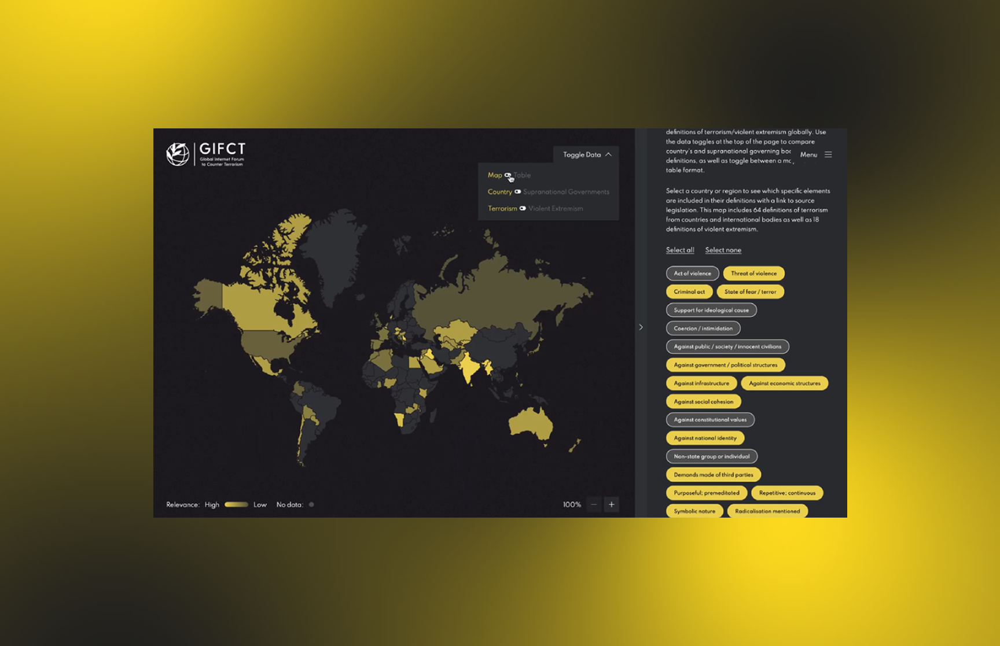

The Global Internet Forum to Counter Terrorism
Global digital platform
A global research tool making terrorism legislation searchable and comparable across jurisdictions. Built to support governments, researchers, and trust-and-safety professionals with different mental models and levels of digital fluency.
Practitioners reported faster legislation research
#1 most adopted GIFCT digital release
Global summit launch